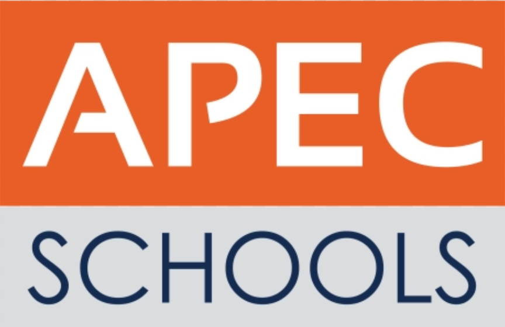

Leader
Leader&Researcher: Carl Renz Harry Roque - is a grade 10 student from Apec Schools North Fairview and the leader of Chorreffic Entertainment project. After pointing out modern day issues that millennials face he suggested a problem solving topic about doing house chorse that most people are not interested in doing these days. Therefore he founded Chorreffic Entertainment.

Researcher
Researcher: Neo Algren Rustia - is a grade 10 student from Apec Schools North Fairview and one of the researchers of Chorreffic Entertainment project. He played the role of being a researcher adding life and content to the project itself.
Website Coding
Coding: Godwill Santos - is a grade 10 student from Apec Schools North Fairview and the coder of the website for Chorreffic Entertainment project. As a coder my role is to give visual and color to the project itself.
Where are we from?
The three of us are Grade 10 students from Apec Schools North Fairview Philippines. A company that is owned by Ayala consisting of more than 20 branches[according to Google]. Apec Schools moto #BetterEachDay symbolizes their goals to help you achieve not one but everyday success.
Vistit them now: www.apecschools.edu.ph
